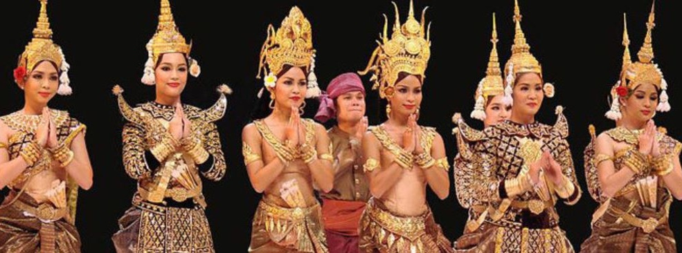
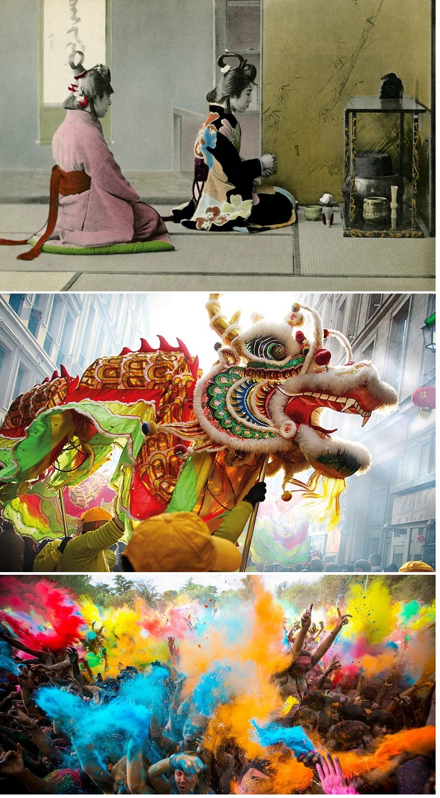
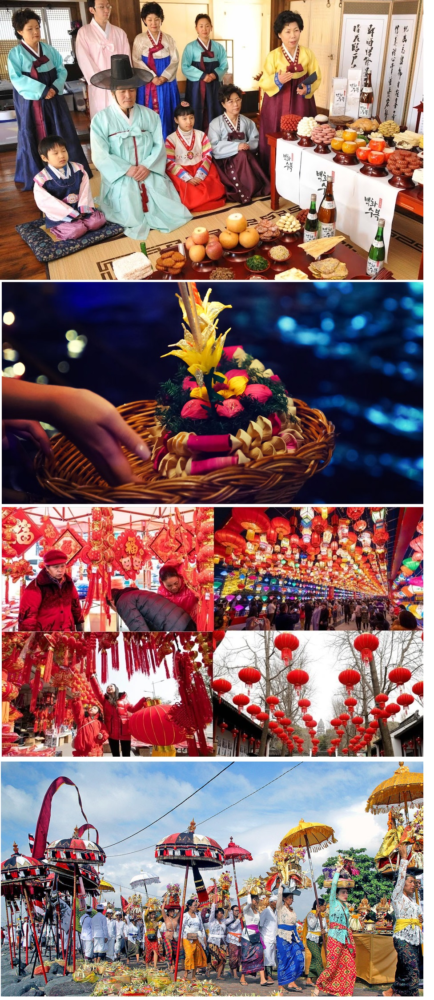
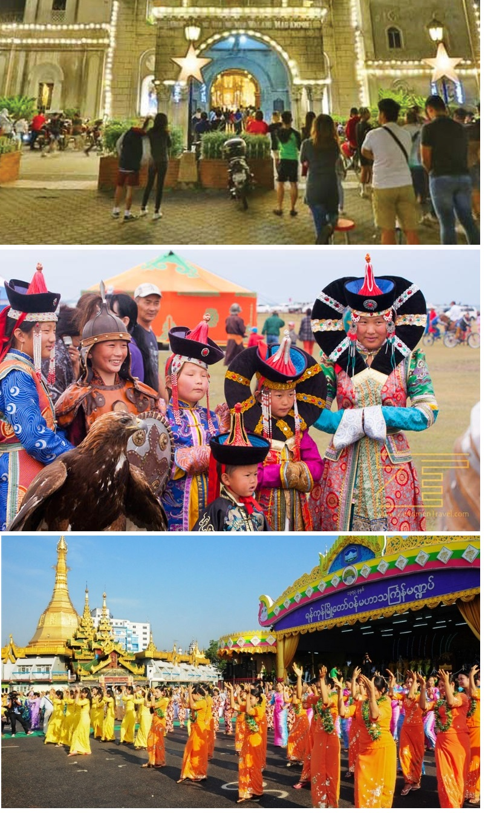

Asia, cel mai mare și divers continent al lumii, este un mozaic de culturi, fiecare cu propriile sale tradiții și obiceiuri unice. Aceste practici reflectă istoria îndelungată, spiritualitatea profundă și diversitatea etnică a regiunii, fiind păstrate și transmise cu sfințenie de la o generație la alta.

În Japonia, ceremonia ceaiului (chanoyu sau sado) este o tradiție rafinată și spirituală care implică prepararea și
servirea ceaiului verde (matcha). Această ceremonie este o formă de artă care combină estetica, ospitalitatea și meditația,
subliniind valorile armoniei, respectului și purității. Participanții sunt invitați să se bucure de frumusețea momentului prezent
și de compania celorlalți.
În China, Festivalul Primăverii, cunoscut și ca Anul Nou Chinezesc, este cea mai importantă sărbătoare tradițională. Festivitățile
durează 15 zile și includ focuri de artificii, parade cu dragon și leu, mese festive și daruri în plicuri roșii (hongbao). Anul Nou
Chinezesc marchează începutul unui nou ciclu lunar și este o ocazie pentru reuniuni familiale și onorarea strămoșilor.
În India, festivalul Holi, cunoscut și ca Festivalul Culorilor, este o celebrare a primăverii, iubirii și victoriei binelui asupra răului.
Oamenii se stropesc unii pe alții cu pulberi colorate și apă, cântă și dansează pe străzi. Holi este un moment de eliberare și egalitate
socială, unde toate barierele de castă și status sunt temporar dizolvate.


În Coreea de Sud, Chuseok este una dintre cele mai mari sărbători tradiționale, echivalentă cu Ziua Recunoștinței.
Familiile se reunesc pentru a mulțumi strămoșilor pentru recoltele bune și pentru a împărți mese festive. Ofertele de
alimente sunt prezentate la mormintele strămoșilor, iar diverse jocuri tradiționale și dansuri (cum ar fi ganggangsullae)
sunt practicate.
În Thailanda, festivalul Loy Krathong este o sărbătoare anuală a luminii și apei. Oamenii își fac krathong-uri (coșulețe din
frunze de bananier) pe care le lansează pe râuri și lacuri pentru a aduce noroc și a cere iertare spiritelor apei. Festivalul
este însoțit de parade, focuri de artificii și spectacole de muzică și dans tradițional.
În Vietnam, Tết Nguyên Đán, sau Anul Nou Vietnamez, este cea mai importantă sărbătoare a anului. Similar cu Anul Nou Chinezesc,
Tết include ritualuri de curățare a casei, pregătirea de mâncăruri tradiționale (cum ar fi bánh chưng), și oferirea de daruri pentru
copii. Este un moment de reînnoire spirituală și reuniuni familiale.
În Indonezia, tradiția Nyepi, sau Ziua Tăcerii, este un eveniment anual unic care marchează Anul Nou balinez. În această zi, insula
Bali se oprește complet – nimeni nu lucrează, nu călătorește și nici nu folosește electricitate. Nyepi este o zi de introspecție și
meditație, menită să purifice sufletele și să restabilească echilibrul natural.
În Filipine, Simbang Gabi este o tradiție de Crăciun care constă în nouă zile de slujbe religioase timpurii, care încep
pe 16 decembrie și se încheie în Ajunul Crăciunului. Aceste slujbe sunt urmate de mese comunitare cu delicatese locale,
cum ar fi bibingka (turtă dulce din orez) și puto bumbong (turtă dulce din orez violet). Simbang Gabi reflectă profunda credință
catolică și spiritul comunitar al filipinezilor.
În Mongolia, festivalul Naadam, cunoscut și ca „Cele Trei Jocuri Bărbătești”, include competiții de lupte tradiționale, tir cu arcul
și curse de cai. Naadam este o sărbătoare națională care are loc în luna iulie și comemorează moștenirea culturală și istorică a mongolilor,
fiind un simbol al mândriei naționale și identității.
În Myanmar, festivalul Thingyan, sau Anul Nou Birman, este marcat de lupte cu apă în stradă, cântece, dansuri și mese festive. Thingyan
simbolizează purificarea și reînnoirea, iar participanții cred că stropirea cu apă îi va curăța de păcatele din anul trecut și le va aduce
noroc în anul ce urmează.

Tradițiile și obiceiurile din Asia sunt profund înrădăcinate în viața cotidiană a oamenilor, reflectând diversitatea și bogăția culturală a continentului. Aceste practici nu doar că păstrează moștenirea culturală, dar și consolidează legăturile comunitare, oferind un sentiment de continuitate și identitate în fața schimbărilor rapide ale lumii moderne.